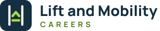
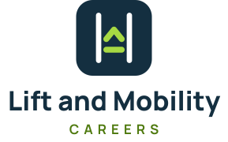
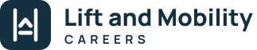

Positioning
Lift and Mobility Careers – Connecting mobility engineering talent with opportunity. An independent, specialist UK job board for engineers in stairlifts, home and through-floor lifts, platform and access lifts, ceiling track hoists, patient handling and accessibility equipment.
Personality: expert, straightforward, trustworthy, practical. Engineering-led, not medical or care-agency. Never hype; never invented numbers.
Voice: plain UK English, second person, short sentences. Say "vacancy", "engineer", "employer". Avoid "rockstar", "ninja", "competitive salary" and exclamation-mark overload.
Logo
The symbol shows two lift guide rails with a platform rising between them – upward movement, engineering and access, without wheelchair or medical clichés.

Primary – on white/light grey. logo-primary.svg
Reversed – on navy. logo-primary-reversed.svg

Alternative (stacked) – square spaces, signage, documents.

Single colour – one-colour print, embroidery.
Symbol / favicon / app icon. Profile image: social-profile-400.png
Clear space: at least the height of the "C" of CAREERS on every side. Minimum size: horizontal logo 140px wide on screen / 35mm in print; symbol 16px.
✔ Use supplied files only · keep proportions · navy, white or light grey backgrounds.
✘ Don't recolour, stretch, add effects, place on photos without a navy panel, or rewrite the name in another font.
Colour
Navy #142F40
RGB 20 47 64 · primary
Lime #A7D943
RGB 167 217 67 · accent, buttons
White #FFFFFF
Light grey #F4F6F7
section backgrounds
Navy 800 #1B3B4F · panels on navy
Lime dark #4F7A0F · lime-family text on white
Muted #55636D · secondary text
Border #E2E7EA
| Combination | Contrast | Use |
|---|---|---|
| Navy on white | ≈13.8:1 | All text |
| Navy on lime | ≈8.4:1 | Primary buttons |
| Lime on navy | ≈8.4:1 | Accents, eyebrows, icons |
| Lime on white | ≈1.6:1 | Never for text – use Lime dark |
Typography
Manrope ExtraBold
Headings, logo, buttons (700–800). Tight leading (1.15–1.2), slight negative tracking.
Inter Regular & SemiBold
Body copy and UI, 16px minimum on web, line height 1.6.
Both are open-source (SIL OFL) and self-hosted on the website. Office fallback: Arial. Scale: H1 52 / H2 30 / H3 18 / body 16 / small 14.
Imagery & icons
Prefer real engineers at work (with permission), tools, rails, lift cars, vans, clean technical detail. Avoid stock "handshake" recruitment images and medical/wheelchair-led imagery. Icons: 24px line icons, 1.8px stroke, rounded caps, navy or lime.
Files
| Logos (SVG, outlined text) | logo-primary, logo-primary-reversed, logo-stacked(-reversed), logo-mono-navy, mark(-reversed) |
| PNG logos | logo-primary.png, logo-primary-reversed.png, logo-stacked.png |
| Favicon / app | favicon.svg, favicon-32.png, apple-touch-icon.png, icon-512.png |
| Social | social-profile-400/800.png, linkedin-cover-1128x191 / 2256x382.png, facebook-cover-1640x624.png, og-default.png |
| Regenerate | python3 tools/brand/build_brand.py && node tools/brand/render_png.js |